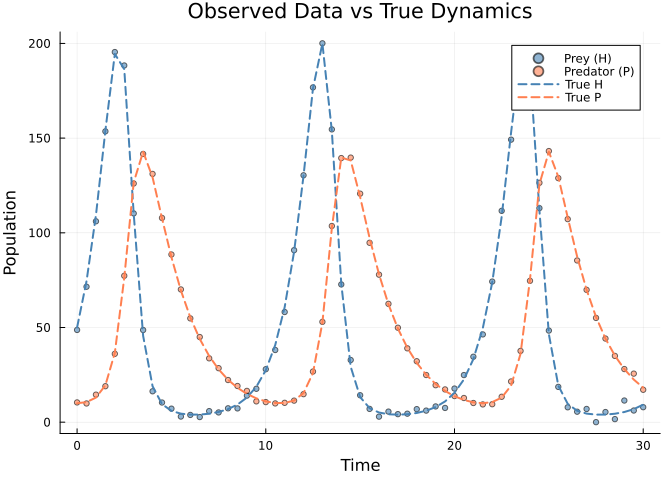
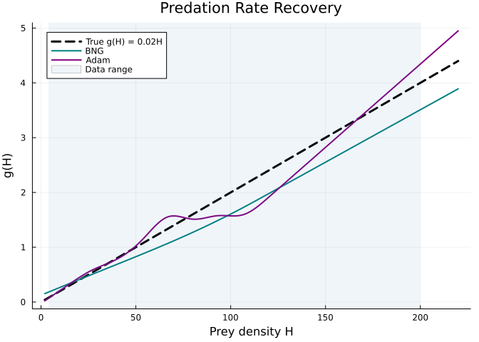
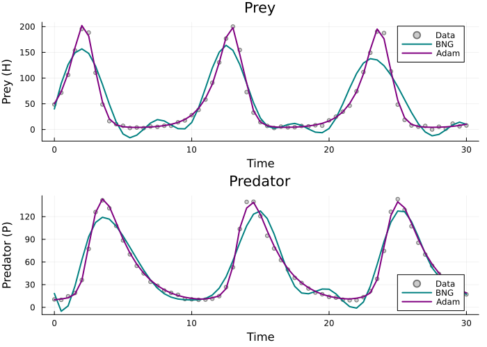
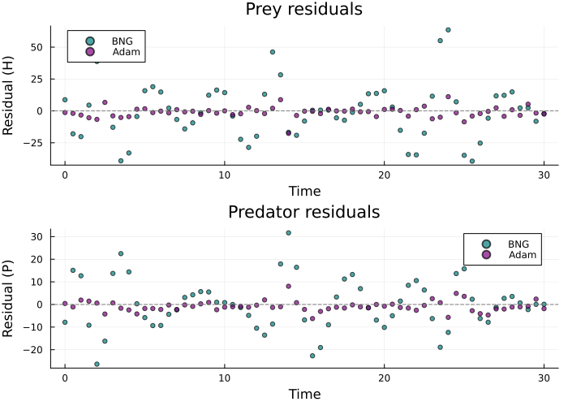
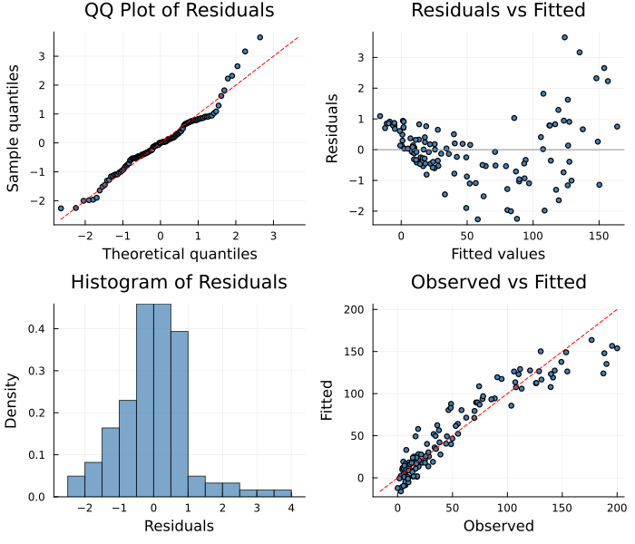

Fast Gradient Matching with BNGSolver
Overview
The BNGSolver implements ensemble Bayesian gradient matching (Bonnaffé & Coulson 2023), which avoids ODE integration entirely:
- Smooth: Fit penalized (GCV) splines to the observed time series to obtain smoothed states ŷ(t) and their derivatives dŷ/dt.
- Match: Optimize the unknown-function parameters by minimizing the variance-marginalized log-posterior of the mismatch between dŷ/dt and the ODE right-hand side — the paper’s “Bayesian regularisation”, which needs no supplied noise variance.
- Ensemble: Repeat over
k_obsresidual-bootstrap resamples of the smoother ×k_procrestarts from perturbed initialisations. Reported unknown functions are posterior-weighted ensemble means, andsol.convergence.ensemble_stdgives pointwise uncertainty bands.
This makes BNG much faster than integration-based solvers (LAML, Adam) and more robust to poor initial parameter values, since no ODE solve is needed during training — and unlike a single-fit gradient matcher, the ensemble quantifies uncertainty.
using PartiallySpecifiedModels
using OrdinaryDiffEq
using Plots; default(fmt=:png)
using Random
Random.seed!(123)TaskLocalRNG()Lotka-Volterra with Unknown Predation
We model a classic Lotka-Volterra predator-prey system where the predation rate g(H) is unknown:
\[\frac{dH}{dt} = \alpha H - g(H) P, \qquad \frac{dP}{dt} = \epsilon \, g(H) P - \delta P\]
The true predation rate is linear: $g(H) = \beta H$ with $\beta = 0.02$. We use standard parameters that produce sustained oscillations.
g_true(H) = 0.02 * H
function lv!(du, u, p, t)
H, P = u
du[1] = 1.0 * H - p.g(H) * P
du[2] = 0.5 * p.g(H) * P - 0.5 * P
end
sol_true = solve(ODEProblem(lv!, [50.0, 10.0], (0.0, 30.0), (; g=g_true)),
Tsit5(); saveat=0.5)
t_data = collect(sol_true.t)
data_H = [sol_true.u[i][1] + 2.0 * randn() for i in 1:length(t_data)]
data_P = [sol_true.u[i][2] + 1.0 * randn() for i in 1:length(t_data)]
data_matrix = hcat(max.(data_H, 0.01), max.(data_P, 0.01))61×2 Matrix{Float64}:
48.7085 10.4309
71.5248 9.88018
106.077 14.535
153.575 18.9921
195.445 36.1008
188.359 77.3002
110.244 126.042
48.6654 141.633
16.3112 131.089
10.3839 107.841
⋮
7.85613 107.228
5.53558 85.4056
6.97702 69.8794
0.01 55.0511
5.35017 44.1628
1.61545 34.9901
11.436 28.0487
6.15968 25.6394
7.90919 17.1187Observed Data

Figure 1: Simulated Lotka-Volterra data with noise
Fit with BNGSolver
BNG is particularly useful for multi-variable systems since it avoids potential ODE instabilities during early optimization.
uf = BSplineApproximator(:g, (0.0, 120.0), 10; initial=H -> 0.015 * H)
prob = PSMProblem(lv!, [50.0, 10.0], (0.0, 30.0), [uf];
data_times=t_data, data_values=Float64.(data_matrix),
obs_to_state=[1, 2], known_params=NamedTuple(),
likelihood=PartiallySpecifiedModels.Gaussian())
sol_bng = solve(prob, BNGSolver(maxiters=3000, lr=0.01, rng_seed=1, verbose=false));┌ Warning: Verbosity toggle: max_iters
│ Interrupted. Larger maxiters is needed. If you are using an integrator for non-stiff ODEs or an automatic switching algorithm (the default), you may want to consider using a method for stiff equations. See the solver pages for more details (e.g. https://docs.sciml.ai/DiffEqDocs/stable/solvers/ode_solve/#Stiff-Problems).
└ @ SciMLBase ~/.julia/packages/SciMLBase/nJKQh/src/integrator_interface.jl:679
┌ Warning: BNGSolver: integrating the fitted dynamics from u0 failed (retcode MaxIters). Reporting the base data smoother as `fitted_values`; `data_loss` therefore measures the SMOOTHER, not the model fit. See `convergence.simulation_failed`.
└ @ PartiallySpecifiedModels ~/Projects/psm/PartiallySpecifiedModels.jl/src/bng_solver.jl:388Compare with AdamSolver
sol_adam = solve(prob, AdamSolver(lr=0.01, maxiters=3000, verbose=false));Recovered Functional Response

Figure 2: Recovered predation rate g(H): BNG vs Adam vs truth
Fitted Trajectories

Figure 3: Fitted trajectories from BNG and Adam solvers
Residuals

Figure 4: Residuals: BNG vs Adam
Diagnostic Plots
A standard 4-panel diagnostic display assesses residual behaviour for the BNG fit. The QQ plot checks normality of standardized residuals, “Residuals vs Fitted” detects systematic patterns, the histogram visualises the residual distribution, and “Observed vs Fitted” checks overall calibration.
using PartiallySpecifiedModels: appraise
diag = appraise(sol_bng)
p_qq = scatter(diag.qq_theoretical, diag.qq_sample,
xlabel="Theoretical quantiles", ylabel="Sample quantiles",
title="QQ Plot of Residuals", ms=3, legend=false, color=:steelblue)
mn, mx = extrema(vcat(diag.qq_theoretical, diag.qq_sample))
plot!(p_qq, [mn, mx], [mn, mx], color=:red, ls=:dash, label="")
p_rf = scatter(diag.fitted, diag.residuals,
xlabel="Fitted values", ylabel="Residuals",
title="Residuals vs Fitted", ms=3, legend=false, color=:steelblue)
hline!(p_rf, [0], color=:gray, ls=:dot)
p_hist = histogram(diag.residuals, normalize=:pdf,
xlabel="Residuals", ylabel="Density",
title="Histogram of Residuals", legend=false, color=:steelblue, alpha=0.7)
p_of = scatter(diag.observed, diag.fitted,
xlabel="Observed", ylabel="Fitted",
title="Observed vs Fitted", ms=3, legend=false, color=:steelblue)
mn2, mx2 = extrema(vcat(diag.observed, diag.fitted))
plot!(p_of, [mn2, mx2], [mn2, mx2], color=:red, ls=:dash, label="")
plot(p_qq, p_rf, p_hist, p_of, layout=(2, 2), size=(700, 600))
Durbin-Watson: 0.818, 0.893When to Use BNGSolver
Advantages:
- No ODE integration → faster, especially for stiff or high-dimensional systems
- Robust to poor initialization (no risk of ODE blowup during training)
- Good for initial exploration before refinement with integration-based solvers
Limitations:
- Requires all (or most) state variables to be observed
- Smoothing quality depends on data density and noise level
- Cannot capture dynamics not visible in the smoothed derivatives
Recommended workflow:
- Use
BNGSolverfor fast initial fit - Refine with
AdamSolverorLAMLusing BNG result as initialization
Summary
The BNGSolver provides a fast, integration-free approach to fitting partially specified models. By matching smoothed derivatives rather than solving the ODE, it avoids the computational cost and instability risks of numerical integration during optimization.